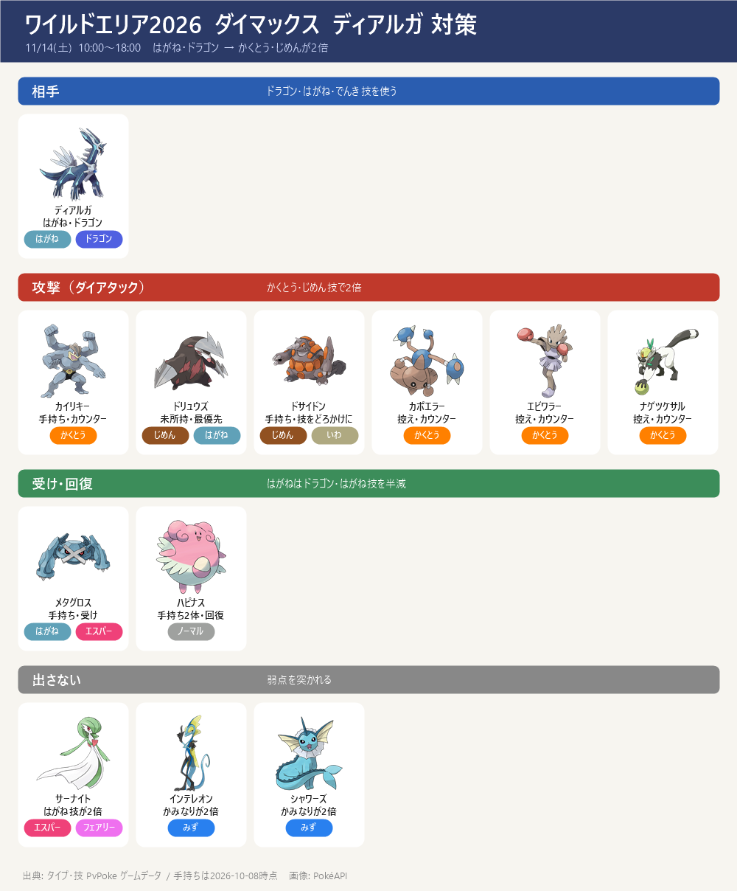
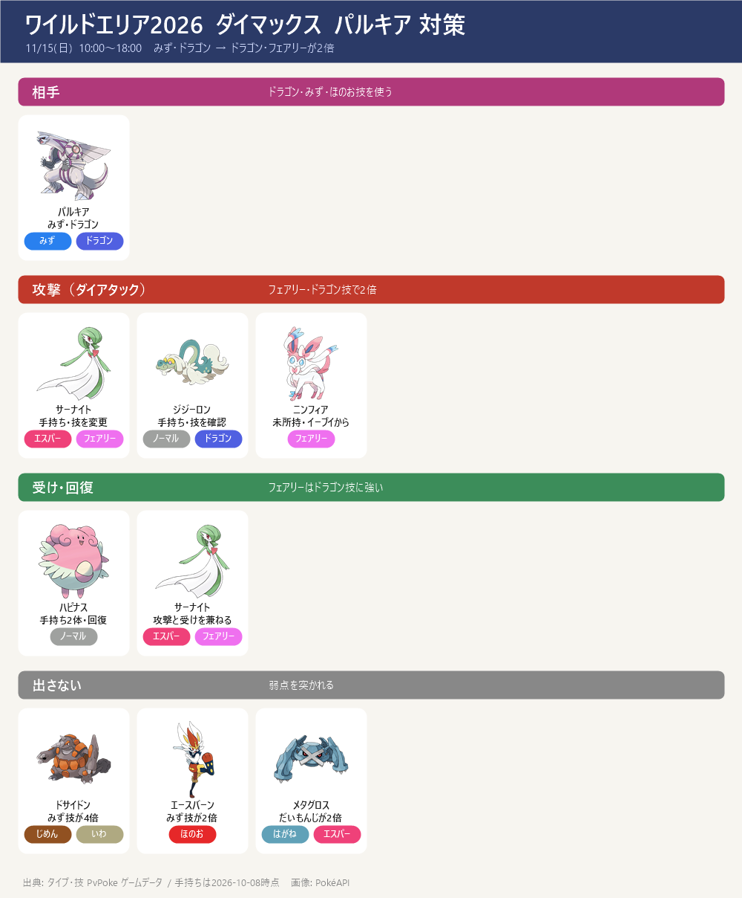

- GOワイルドエリア：グローバル 11/14(土)・15(日) 各日 10:00～18:00。ダイマックス ディアルガ（14日）・パルキア（15日）はチケットなしでも戦える
- 2体は弱点がまったく違う → 日ごとにパーティを入れ替える。共通で使えるのはハピナス（回復）だけ
11/14 までの準備
- 最優先：10/11(日) 21:00 までに ★1 マックスバトルのモグリューを取る（ソロ可。みず・くさ技が有効 → インテレオン・シャワーズ・フシギバナ）→ アメ50でドリュウズ。通常技はマッドショットに
- ★2 のイーブイも 10/11 21:00 まで → 相棒で仲良しになってニンフィアへ（パルキア戦の主力候補）
- わざマシン：サーナイト → あまえる（ランダムなので複数個） ／ ドリュウズ → マッドショット ／ ジジーロン → ドラゴンブレス（違っていれば）
- 強化（ほしのすな）：カイリキー（CP1698）→ ドリュウズ → サーナイト の順。10/22(木) 18:00 ネマシュのスポットライトアワー（すな2倍）でかけらを使って稼ぐ
- ダイマックス技のレベル上げ（マックス粒子）：攻撃役＝ダイアタック、メタグロス・ハピナス＝ダイウォール
- 当日：無料でも参加できる（チケット1,680円は色違い確率アップ・アンノーン・レイドパス6枚など）。ダイマックスのバトルは4人まで → 誰が受け・回復かを先に決める
- 仙台開催中（11/6～8）：現地の参加者に招待してもらえれば、リモートで1週早く挑める可能性（ポケらくのみ記載・公式は未明記）
ダイマックス ディアルガ（11/14 土）

- はがね・ドラゴン → 弱点は かくとう・じめん（2倍）
- 使ってくる技: ドラゴンブレス／メタルクロー／りゅうせいぐん／アイアンヘッド／かみなり（でんき）
- 受け役ははがねタイプ（ドラゴン技・はがね技を半減）。みずタイプはかみなりが2倍なので出さない
- 当日の並び（例）：カイリキー（攻撃）／メタグロス（受け）／ハピナス（回復）。ドリュウズが取れたらハピナスかカイリキーと入れ替え
- 出さない：サーナイト（はがね技が2倍）・インテレオン／シャワーズ（かみなりが2倍）
ダイマックス パルキア（11/15 日）

- みず・ドラゴン → 弱点は ドラゴン・フェアリー（2倍）
- 使ってくる技: ドラゴンブレス／ドラゴンテール／りゅうせいぐん／ハイドロポンプ／アクアテール／だいもんじ（ほのお）
- 受け役はフェアリータイプ（ドラゴン技を大きく半減）。メタグロスはだいもんじが2倍なので、ディアルガ戦と違って受けに向かない
- 当日の並び（例）：サーナイト（攻撃＋受け）／ジジーロン（攻撃）／ハピナス（回復）
- サーナイトは通常技を ねんりき → あまえる に替える（通常わざマシン）。これでダイフェアリーになり2倍。わざマシンは今の技以外からランダムに選ばれるので、2〜3個用意
- ジジーロンの通常技を確認：ドラゴンブレスならダイドラグーンで2倍。じんつうりきだとエスパーになり等倍
- 出さない：ドサイドン・ドリュウズ（みず技が大きく効く）・エースバーン（みずが2倍）・メタグロス（だいもんじが2倍）
- 訂正（10/9）：前の版で「チャームボイス」と書いていたのは誤り。サーナイト・ニンフィアが覚えるフェアリーの通常技は「あまえる」（9db・ポケらくで確認）
出典: タイプ・技: PvPoke ゲームデータ ／ イベント: ポケらく・ゲームウィズ・9db ／ 手持ち: my_dmax.json（2026-10-08）
画像: PokéAPI ／ 更新 2026-10-09